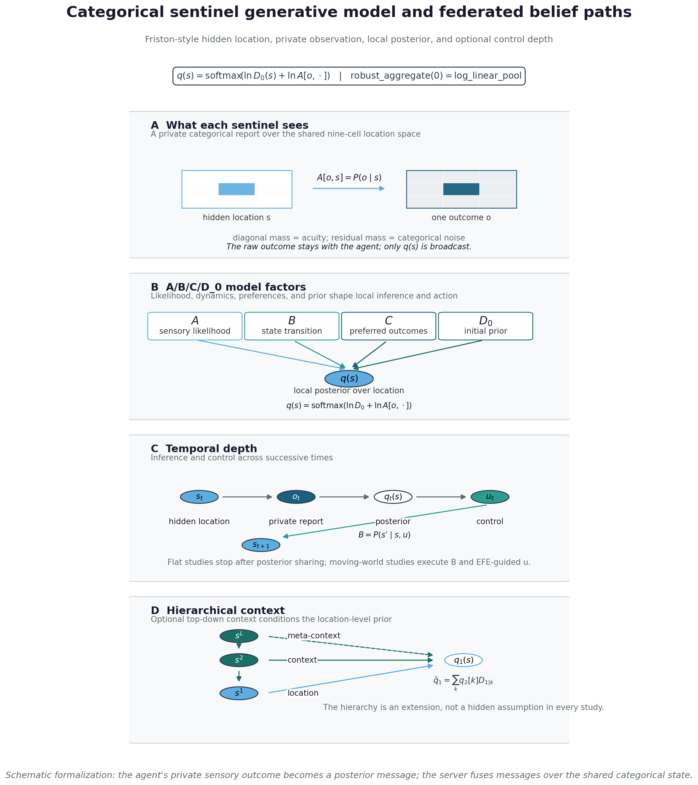
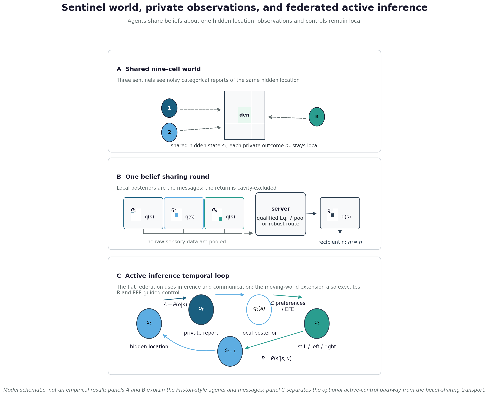

Generative model: categorical states, observations, actions, and hierarchy
The 9 studies — including the contaminated-sentinel robustness sweep
(Study 4) — run on one shared sentinel world (Studies 5–7 use its moving
and hierarchical variants): a discrete sentinel partially-observable
Markov decision process (POMDP) using the categorical world structure
illustrated by Friston et al. (Friston et al. 2024), Figures 1 and 4.
We adopt the discrete-state active-inference formulation that the
community has standardized around — the categorical \(A/B/C/D_0\) generative model of da Costa et
al. (Da Costa et al. 2020), the same object the pymdp
(Heins et al. 2022) and RxInfer (Bagaev et al. 2023) toolboxes operate on —
and reimplement it in pure NumPy in pomdp.py so the colony,
its sensors, and its dynamics are exactly the ones the analysis
executes. A colony of sentinels watches a single hidden creature whose
location is the shared latent factor they federate beliefs about.
The structural map in Figure 4 follows the same generative-model vocabulary while making the implementation boundary visible: Panel A shows what one agent actually sees — one noisy categorical report over the 9 possible locations — while Panel B identifies the \(A/B/C/D_0\) factors that turn that report into a local posterior. Temporal depth then describes state, observation, posterior, and control order; hierarchical depth describes conditioned priors. It is a formal schematic, not an assertion that every displayed dependency is simultaneously estimated in every study.

State space: one shared latent factor
The world holds one hidden factor: the creature’s location on a
square grid of side \(L\), giving \(n_s = L^2\) location states. Our sentinel
world uses the \(3\times 3\)
cardinality illustrated in Friston et al. (Friston et al. 2024), Fig.
1, so \(n_s = 9\) — the cardinality
pomdp.N_LOCATIONS exposes and
experiment_config carries as n_locations. This
single location factor is precisely the latent the colony gossips about:
it is the shared argument of the log-linear pool (Eq. (5)) and of
every belief-sharing round (Eq. (9)). Fixing one
hidden factor keeps the recovery limits of Section 6 closed-form and
exactly testable, rather than approximated.
Four categorical tensors: likelihood, transitions, preferences, priors
The generative model is the tuple \((A, B, C, D_0)\) in the discrete active-inference convention: a categorical probability mass function is a non-negative vector summing to one, and a likelihood matrix is shape \((n_o, n_s)\) whose columns (indexed by hidden state) are categorical.
Observation likelihood \(A =
P(o\mid s)\). Each sentinel observes the creature’s cell
through a noisy sensor. With probability acuity the sensor
reports the true cell; the residual mass \(1-\text{acuity}\) spreads uniformly over
the other \(n_s-1\) cells. With outcome
cardinality \(n_o = n_s\), the single
location modality is one \((n_s, n_s)\)
matrix:
\[ A_{o s} \;=\; \begin{cases} \text{acuity}, & o = s,\\ \dfrac{1-\text{acuity}}{n_s - 1}, & o \neq s, \end{cases} \qquad \textstyle\sum_{o} A_{o s} = 1 . \] {#eq:observation-likelihood}
The acuity in Eq. (10) tunes how peaked the sensor is: high acuity gives a near-diagonal \(A\) that pins the creature; the belief-sharing study deliberately runs the colony at the low acuity \(\text{acuity} = 0.55\), where no single sentinel can resolve the location alone and the colony must pool evidence to do so. When a seeded generator is supplied, each sentinel’s acuity is jittered by a small non-negative perturbation, so a colony carries slightly heterogeneous likelihoods while every column remains a proper pmf.
Transition tensor \(B =
P(s'\mid s, u)\). The creature moves on the grid
under three control paths — still, left,
right — so \(B\) has shape
\((n_s, n_s, n_u)\) with \(n_u = 3\). still is the
deterministic self-loop; left and right
decrement and increment the grid column, saturating at the walls (a
wall-adjacent move in the wall’s direction is a self-loop). All three
controls act on the column index alone, so the creature’s row is
preserved and its motion is confined to the horizontal axis of the grid
— a deliberate one-dimensional control over the two-dimensional location
factor. Every slice \(B_{\cdot\,\cdot\,u}\) is column-normalized
by construction, so the transition is a valid categorical for each
action.
Log-preference \(C\). The sentinel prefers to see the creature near the den (the center cell), encoded as a log-preference vector of shape \((n_o, 1)\) with a positive bump on the center outcome and zero elsewhere. The preferred-outcome distribution that the expected-free-energy decomposition of Section 5.15 uses is \(p_C(o) = \mathrm{softmax}(C)[o]\).
Initial prior \(D_0\). The creature is believed to start at the grid center, so \(D_0\) of shape \((n_s, 1)\) places unit mass on the center cell. \(D_0\) enters state inference as the log-prior of the one-step variational update (Eq. (11) below).
The columns-are-pmfs invariant is not assumed — it is pinned by ISC-15, which checks that every column of \(A\) and of each \(B_{\cdot\,\cdot\,u}\) sums to one.
One-step variational state inference in the grid world
Given an observation \(o\), a sentinel forms a posterior over the creature’s location by a single softmax step (Friston et al. (Friston et al. 2024), Eq. 4): the log-prior plus the additive log-likelihood message, summed over any conditionally independent modalities \(m\),
\[ q(s) \;=\; \mathrm{softmax}\!\Big(\ln D_0(s) \;+\; \textstyle\sum_m \ln A_m[o_m, s]\Big). \] {#eq:state-inference}
The message \(\ln A_m[o_m, \cdot]\) is the row of \(A_m\) that the observed outcome selects; summing messages over modalities makes each modality an additive evidence term — the categorical product-of-experts. The companion variational free energy, the scalar Eq. (11) minimizes, is
\[ F[q] \;=\; \mathbb{E}_q\!\big[\ln q(s) - \ln D_0(s) - \textstyle\sum_m \ln A_m[o_m, s]\big] \;=\; \mathrm{KL}\big(q \,\|\, D_0\big) \;-\; \mathbb{E}_q\!\big[\textstyle\sum_m \ln A_m[o_m, s]\big], \] {#eq:variational-free-energy}
reported in nats. The one-step posterior of Eq. (11) is its
unique minimizer, where \(F\) equals
the negative log model evidence. Both live in
belief_updating.infer_states and
belief_updating.vfe, and the free energy of Eq. (12)
is the quantity the communicating-versus-incommunicado colony comparison
of Section 5.22
scores.
This inference step is not a separate mechanism bolted onto the colony: it is the \(L=\mathrm{NLL}\), learning-rate-1 special case of the generalized-Bayes posterior Eq. (1), reusing the same locked softmax. That client identity recovers the stated categorical Bayes substrate at its trusting limits. The separate server identity in Section 5.8 then yields the project log-linear pool under its qualified Eq. 7 message-combination bridge; together these do not recover the complete Friston protocol (Section 6).
Hidden-state to action loop: the POMDP substrate
The categorical POMDP loop in Figure 5 separates the common latent-state substrate from the federation transport. In the sentinel interpretation, an agent is a location-sensitive observer: the hidden state is one of 9 cells, the private outcome is a noisy categorical report of that location, and the agent sends its posterior over the location rather than the report itself. The flat belief-sharing studies use the observation, posterior, and communication subset; the moving-world extension also executes transition and EFE-guided action paths. The diagram therefore gives readers the active-inference context without turning a conceptual loop into a claim that every study estimates every latent or policy quantity.
